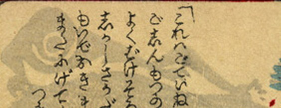

← 图鉴索引

一つ目の化物の影。手足が長く、顔には大きな一つ目だけみえる。
出典：親書誌：U426_nichibunken_0226：化物の嫁入；バケモノノヨメイリ／日付：2010／資源識別子：U426_nichibunken_0226_0024_0000
Copyright (c)2010- International Research Center for Japanese Studies, Kyoto, Japan. All rights reserved.